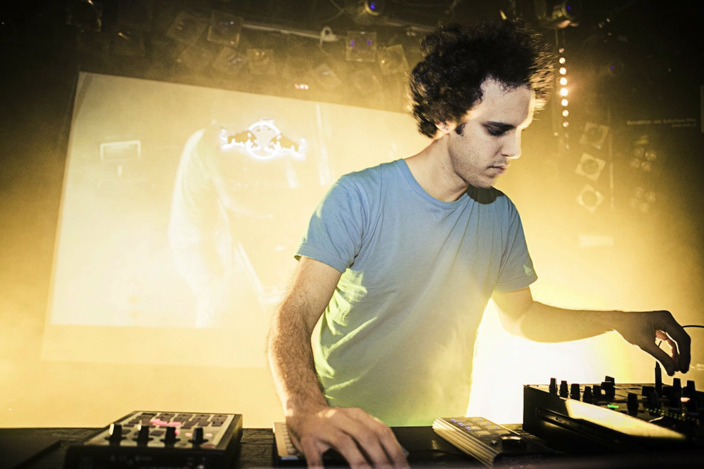

Four Tet

Active (1998-Present)
Four Tet is an experimental electronic muscian known for his innovative jazz sampling.
Read More
Back to Top
Studio Albums
- Dialogue (1999)
- Pause (2001)
- Rounds (2003)
- Everything Ecstatic (2005)
- There is Love in You (2010)
- Pink (2012)
- Beautiful Rewind (2013)
- Morning/Evening (2015)
- New Energy (2017)
Boards of Canada
Active (1986-Present)
Boards of Canada are an electronic duo known for their psychedelic nostalgia filled records. They have expressed that they're fascinated by the idea of putting hidden messages in their records for people to uncover. For the build up to the release of their latest record they hide records in stores around the world for fans to find and decode the release date of the upcoming album.
Read More
Back to Top
Studio Albums
- Music Has the Right to Children (1998)
- Geogaddi (2002)
- The Campfire Headphase (2005)
- Tomorrow's Harvest (2013)
The Avalanches
Active (1997-Present)
The Avalanches are an australian plunderphonics group who has seen it's members change greatly over the years. Best known for their album Since I Left You, which was praised for it's creative use of samples to create an hommage to records, The Avalanches then disappeared for nearly two decades before releasing Wildflower.
Read More
Back to Top
Studio Albums
- Since I Left You (2000)
- Wildflower (2016)
Dan Snaith
Active (2001-Present)
Dan Snaith is an electronic artist known for his use of avant-garde samples and psychedelic filled music. He has gone by a number of aliases including Manitoba, Caribou and Daphni.
Read More
Back to Top
Studio Albums
- Start Breaking My Heart (2001)
- Up in Flames (2003)
- The Milk of Human Kindness (2005)
- Andorra (2007)
- Swim (2010)
- Jiaolong (2012)
- Our Love (2014)
- FabricLive.93 (2017)
- Joli Mai (2017)
The Books
Active (2000-2012)
Now disbanded, The Books were an experimental plunderphonics group that sampled from obscure places and mixed it with acoustic instruments. They were active from 2000-2012.
Read More
Back to Top
Studio Albums
- Thought for Food (2002)
- The Lemon of Pink (2003)
- Lost and Safe (2005)
- The Way Out (2010)